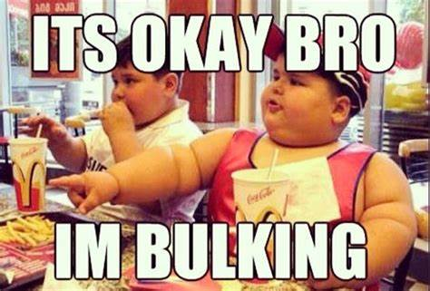

Bulking: The Basics
If you're looking to build muscle, you've likely heard the term "bulking" thrown around. But what exactly does it mean to bulk, and how can you do it effectively? In this guide, we'll break down the basics of bulking and give you some tips for maximizing your muscle gains.
What is Bulking?
Bulking is a term used in the fitness world to describe a period of time when an individual is focused on building muscle mass. During a bulk, you'll typically aim to consume more calories than your body burns in order to support muscle growth. This often involves increasing your intake of protein and carbohydrates, which provide the building blocks and energy your body needs to build new muscle tissue.
While bulking, you'll likely be doing weight training exercises that target major muscle groups in the body, such as squats, deadlifts, bench press, and shoulder press. This type of training helps to stimulate muscle growth, and combined with a calorie surplus, can lead to significant gains in muscle mass.
How to Bulk Effectively
While the idea of eating more and lifting heavy weights may sound appealing, bulking isn't a free-for-all. To bulk effectively, you need to be strategic about your approach. Here are some tips for maximizing your muscle gains during a bulk:
- Eat a calorie surplus: In order to build muscle,your body needs to be in a state of caloric surplus. This means that you need to consume more calories than your body burns on a daily basis. Aim for a surplus of 250-500 calories per day, and focus on getting plenty of protein to support muscle growth.
- Lift heavy weights: During a bulk, you'll want to focus on lifting heavy weights to stimulate muscle growth. Choose compound exercises that target multiple muscle groups at once, and aim to increase the weight you're lifting over time.
No dirty bulking!
It can be easy to let the diet slip on the bulk with many going on a dirty bulk
Eating healthy while on a bulk is important because it provides your body with the necessary nutrients to support muscle growth and recovery. Consuming a diet high in processed foods and unhealthy fats can lead to weight gain, but it may not be the type of weight you want. Instead of gaining muscle, you may end up with excess body fat and a lack of energy for your workouts. Eating a balanced diet that includes plenty of protein, healthy fats, and complex carbohydrates can help you achieve your weight gain goals while also supporting your overall health and well-being. Remember, just because you want to gain weight doesn't mean you should sacrifice your health in the process.
Conclusion
Bulking can be an effective way to build muscle mass and make significant gains in strength and size. By eating a calorie surplus, lifting heavy weights, getting enough rest, and tracking your progress, you can maximize your muscle gains and achieve the results you're looking for. Just remember that bulking isn't a free pass to eat whatever you want - it requires discipline and strategy to do it effectively. With the right approach, however, you can make some serious gains and take your physique to the next level.